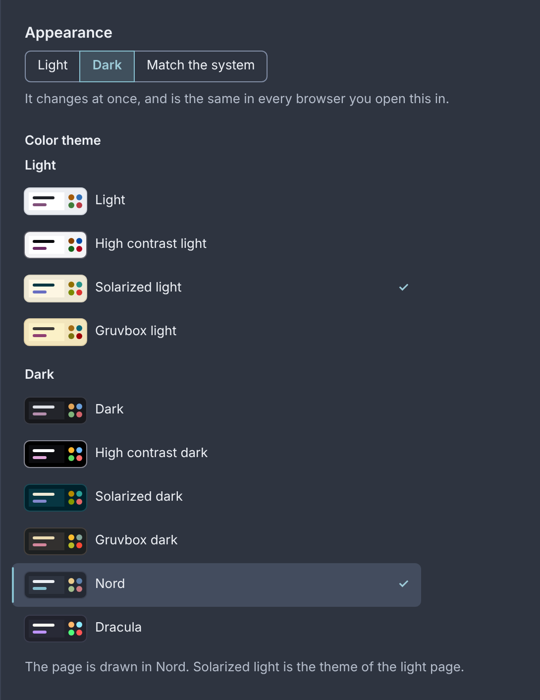

Personalize temas, cores, fontes e teclas do terminal
Escolha as cores da página entre dez temas, dê a cada terminal um tema próprio e defina cores isoladas, a fonte e o cursor do terminal e todas as teclas, em Settings ou em um arquivo de configurações que descreve a si mesmo.
Dez temas de cores, claros e escuros
Settings → Appearance começa com três opções: Light, Dark e Match the system, que é como uma instalação nova começa e que acompanha o sistema quando ele muda. Abaixo delas você escolhe um tema de cada tipo: Light, High contrast light, Solarized light ou Gruvbox light; Dark, High contrast dark, Solarized dark, Gruvbox dark, Nord ou Dracula. Cada um aparece com uma pequena imagem das suas cores.
Uma mudança vale na hora para a página e para todos os terminais, sem recarregar, e fica no arquivo de configurações, então todo navegador em que você abrir o Aubergine concorda. A paleta tem o mesmo como comandos, por exemplo Color theme: Nord.


Um tema de cores diferente para cada terminal
Theme… no menu de um terminal o desenha em qualquer um dos dez temas, seja qual for o da página. Só o corpo muda: o título, a nota e os detalhes continuam como a página. Um terminal sem tema próprio segue Terminal theme em Settings, o padrão para terminais, e, sem ele, a página.

A mesma escolha está no menu da linha do terminal na lista, nos detalhes e na paleta. Um terminal e um quadro também podem ter uma cor própria, uma de treze ou Your own… para qualquer cor, e a aba de um canvas também; a cor de um terminal é também a da sua linha na lista.

Defina cores isoladas à mão
Além dos temas, 35 cores da página podem ser definidas no arquivo de configurações, config.json, em appearance.colors: o nome de uma cor e um valor escrito #rrggbb. Escrita no topo, uma cor vale sobre todos os temas; escrita sob o ID de um tema entre colchetes, como "[nord]", vale só sobre esse tema, e prevalece.
{
"$schema": "./config.schema.json",
"appearance": {
"colors": {
"accent": "#c678dd",
"[nord]": { "terminal-bg": "#242933" }
}
}
}Os nomes são os tokens de cor da página, como bg, text, accent e terminal-bg; docs/design.md lista todos. Uma entrada errada é ignorada, e o resto do arquivo continua valendo; Settings → Appearance diz qual foi ignorada. As cores que você define são suas: nada confere se o que você escreveu dá para ler.
Temas seus, como arquivos
Um tema seu é um arquivo JSON em themes/ na pasta de dados: um dos dez como base, do mesmo tipo, com qualquer uma das 35 cores por cima, e as cores próprias de um terminal: o texto, o cursor, o que está selecionado e as dezesseis cores que um programa pede. Ele aparece depois dos dez do seu tipo, marcado como seu, e pode ser escolhido onde eles podem: para a página, como padrão dos terminais ou para um só terminal. As sombras e o anel de foco continuam os da base, e nada em um arquivo é executado.
{
"$schema": "../theme.schema.json",
"name": "Harbor",
"kind": "dark",
"base": "nord",
"colors": { "bg": "#0e1a24", "accent": "#5fb3b3" },
"terminal": { "foreground": "#d8dee9", "cursor": "#5fb3b3" }
}aubergine theme new harbor --from nord escreve um arquivo para começar, com cada cor do tema de origem; aubergine theme check diz o que está errado em um; Read themes again em Settings carrega uma mudança. Se as suas cores são legíveis é você quem julga: o Settings só avisa quando um texto pode ser difícil de ler. docs/themes.md descreve o formato.
Um tema para um projeto, e para terminais por etiqueta
Um projeto pode desenhar a página num tema próprio enquanto você o olha, para que um relance diga onde você está. Em Projects…, When light e When dark ao lado de um projeto escolhem um tema de cada tipo; As the page deixa para Settings. Em qualquer outro projeto a página fica como você a escolheu, e recarregar no endereço desse projeto o desenha no seu tema desde a primeira pintura.
By tag, em Terminal theme no Settings, dá um tema próprio aos terminais com uma etiqueta: por exemplo, todo terminal com a etiqueta prod em Dracula, na hora e seja qual for o tema da página. Vale a primeira linha cuja etiqueta o terminal tem, e o tema próprio de um terminal vem antes de todas. No arquivo de configurações é appearance.byTag:
{
"appearance": {
"byTag": [
{ "tag": "prod", "theme": "dracula" },
{ "tag": "docs", "theme": "solarized-light" }
]
}
}Muitas vezes basta outra cor de destaque. aubergine theme new teal --from nord --accent "#2f9e8f" escreve um arquivo de tema que muda só o destaque do Nord e as cinco cores que o acompanham, calculadas para continuarem legíveis. Escolha-o para um projeto ou uma etiqueta como qualquer outro tema.
Fontes, cursor e atalhos de teclado
Terminal text em Settings → Appearance define o tamanho do texto de um terminal, de 8 a 32 pixels, e a fonte, como uma lista da qual se usa a primeira fonte encontrada. Cursor define a forma, bloco, barra ou sublinhado, e se ele pisca.
Todas as teclas podem ser mudadas. Adicione shortcuts ao arquivo de configurações: o nome de um comando com uma combinação, uma lista de combinações ou null para nenhuma tecla. shortcutsInAppWindow aceita o mesmo e vale só onde o Aubergine está instalado como app com janela própria. Recarregue a página, e a folha de atalhos (?), a paleta e as dicas mostram as teclas como você definiu.
{
"shortcuts": {
"terminal.park": "X",
"attention.next": ["Ctrl+Cmd+G", "W"],
"view.fit": null
}
}Uma tecla definida duas vezes, ou uma que não dá para ler, é apontada no topo da folha de atalhos e pelo servidor, e o resto do arquivo continua valendo. Uma tecla simples, ou Ctrl ou Option com uma tecla, só funciona enquanto nenhum terminal tem o teclado, para que todo programa em um terminal continue recebendo as teclas de que precisa. Mais em Keyboard, no README.
Escolha o que um título e uma linha dizem
Depois do nome de um terminal, o título dele e a linha dele na lista dizem o que dois modelos dizem: texto com marcadores como {state}, {folder}, {time} e {field:Ticket}. Mude-os em Settings → Appearance → Titles and rows, onde o título e a linha reais são desenhados sob cada campo enquanto você digita, ou no arquivo de configurações. Aqui o título diz o estado, a pasta, o campo Ticket, os links e as tags, e a linha o estado, o passo de uma execução, o branch e a hora:
{
"appearance": {
"titleFormat": "{state} {folder} · {field:Ticket} {links} {tags}",
"rowFormat": "{state} {step} {branch} · {time}"
}
}Um marcador sem nada a dizer é omitido junto com o texto que leva a ele: num terminal sem ticket, links nem tags, esse título diz só o estado e a pasta, sem nenhum ponto sobrando. Um modelo contém só texto e marcadores, sem marcação e sem estilo; cada um é desenhado como a página desenha essa coisa em outros lugares, o estado na sua cor e um link como um chip. Um marcador errado é indicado sob o campo e ignorado, e Reset devolve exatamente o que é desenhado sem modelo. Todos os marcadores estão em docs/templates.md.
Sua própria folha de estilo
Para tudo o que as configurações não alcançam, escreva uma folha de estilo sua: custom.css na pasta de dados. O servidor a vincula como a última coisa no cabeçalho da página, então ela está lá desde a primeira pintura, e uma regra sua vence uma regra do app tão específica quanto ela, sem !important. aubergine css new escreve uma para começar, e Settings → Appearance → Your stylesheet diz se ela foi encontrada, a desliga e a lê de novo sem recarregar.
Conte com os ganchos e com nada mais: cada token (--accent, --radius-surface e os outros), os atributos na raiz da página (data-theme, data-page), as partes marcadas com data-part e os atributos próprios de um terminal (data-tags, data-state, data-name), os mesmos no nó dele, na linha dele e na aba do navegador só dele. Eles estão em docs/hooks.md e são mantidos de uma versão para a outra; nomes de classe, não. Aqui o título de cada terminal com a tag prod fica vermelho-escuro, e o mapa some:
[data-part="terminal"][data-tags~="prod"] [data-part="terminal-title"] {
background: #5c1f24;
}
[data-part="map"] {
display: none;
}E cantos mais arredondados em todo lugar, por dois tokens:
:root {
--radius-surface: 16px;
--radius-control: 10px;
}Se uma regra quebrar a página, abra-a com ?plain depois do endereço: ela é enviada sem a sua folha de estilo. Nada do que uma folha de estilo cita é buscado em outro endereço: uma imagem, uma fonte ou uma folha de estilo vem deste servidor ou de dados embutidos, então um trecho colado não consegue enviar para outro lugar o que está na sua página. É uma proteção para um arquivo que você escreveu ou colou, não uma sandbox. Só foi testado no Chromium.
O seu próprio código: plugins
Para além das definições e da folha de estilo, escreva código: um plugin é um módulo JavaScript seu em plugins/<id>/ na pasta de dados, com um plugin.json que o nomeia. A página importa-o tal como está, sem passo de compilação, e dá-lhe um objeto, aubergine: uma secção do painel lateral, um filtro da lista, um marcador para um título ou uma linha, um comando na paleta, uma forma de ver uma execução, o estado e cada mudança à medida que acontece, e cada chamada que a página faz. aubergine plugin new <id> escreve um para começar.
Um plugin corre na página como você, e nada o mantém à parte. Pode ler cada terminal, escrever em qualquer um e mudar qualquer coisa na página. Não está numa sandbox. Só corre depois de o ligar em Settings → Plugins, e só como os seus ficheiros estavam quando o fez: um ficheiro que muda não é carregado até voltar a olhar. Isso evita que código corra por acidente; não é uma fechadura, já que um agente num terminal também corre como você e poderia escrever o ficheiro de definições. Ligue só o que escreveu ou leu.
Os membros de aubergine estão em docs/plugins.md e de uma versão para a seguinte só são acrescentados; o que um plugin alcançar para além deles pode mudar. Um comando na paleta, em poucas linhas:
// plugins/hello/index.js
export function activate(aubergine) {
aubergine.commands.add({
id: 'hello',
title: 'Say hello',
run: () => aubergine.say('Hello from my plugin'),
});
}Se um plugin estragar a página, abra-a com ?plain depois do endereço: nenhum plugin é carregado e a sua folha de estilo fica de fora. Um plugin que falha é dito em Settings, e a página e os outros plugins continuam. Desligado, tudo o que acrescentou através de aubergine desaparece de imediato; o que fez para além disso, com um recarregamento. Só foi experimentado no Chromium.
Um arquivo de configurações que descreve a si mesmo
Tudo isso fica em config.json na pasta de dados do Aubergine, e aubergine settings path mostra onde ela está. Qualquer chave pode ser omitida. Um arquivo que não dá para ler significa os padrões, nunca um servidor que não inicia. Settings na página escreve só as chaves que muda e deixa o resto do arquivo como você escreveu.
Toda vez que inicia, o servidor escreve config.schema.json ao lado do arquivo. Adicione uma linha, e um editor que lê JSON Schema descreve e completa cada chave:
{ "$schema": "./config.schema.json" }aubergine settings list mostra cada chave com o valor atual, marcada onde não é o padrão, e aubergine settings schema mostra o esquema. docs/settings.md descreve cada chave, o padrão e se quem a escreve é Settings ou você.
aubergine settings path
aubergine settings list
aubergine settings schemaNa página, Settings → Every setting lista as mesmas chaves com os valores, e as encontra enquanto você digita. Uma chave que Settings muda leva você ao controle dela; uma chave escrita à mão tem Copy, para a linha a adicionar ao arquivo. Nada ali muda uma configuração.

Algumas escolhas são deste navegador e ficam nele: se os canvases são abas, uma lista ou uma coluna; onde fica a barra sobre o canvas e se ela fica aberta; se o painel lateral e o mapa estão recolhidos; a largura do painel e dos detalhes de um terminal; e como a lista de terminais é filtrada, agrupada e ordenada.
O que um programa ou um agente pode mudar, e o que continua sendo seu
Pela API local, um programa com um token de API pode organizar canvases com canvases:write: nomeá-los, dar cor e ordem, mover, redimensionar e colorir terminais neles, e adicionar quadros. Com sessions:write ele pode renomear e etiquetar um terminal, mudar seus campos e dar a ele um tema de cores. Ele alcança só os projetos que o token alcança.
O agente de um terminal descreve o próprio terminal e nenhum outro: um nome, um resumo do que ele faz, seus links e seus campos, com aubergine describe, aubergine link add e aubergine field set. Onde você mesmo escreveu um nome, um resumo ou um campo, o seu fica, e o que o agente mandou é guardado ao lado como sugestão. Um agente, ou um programa com workflows:write, também pode propor um tema de cores com aubergine theme propose: ele não é desenhado em lugar nenhum até você o ler em Review, vê-lo desenhado, experimentá-lo na página e aceitá-lo, e aceitar escreve o arquivo dele sem escolher nada.
As configurações em si são só suas. Nenhum token, terminal ou agente pode mudá-las: PUT /v1/settings/appearance responde só ao navegador com login, e appearance.colors, shortcuts e o resto são escritos à mão no arquivo.
Como outras ferramentas deixam você personalizar a interface?
Como isto foi escrito. O que a tabela diz sobre cada ferramenta vem da documentação dela, lida em 28 de novembro de 2026 e com link no nome e nas células. Não executamos essas ferramentas para isto. “Nada encontrado” quer dizer que a documentação que lemos não descreve nada, não que a ferramenta não possa fazer. Se algo estiver errado ou desatualizado, avise a gente.
| Ferramenta | Configurações | Temas e cores | Seu próprio CSS | Seu próprio código | Modelos de títulos e status |
|---|---|---|---|---|---|
| VS Code Um editor | settings.json ou o editor de Settings, em camadas de usuário a workspace, pasta e linguagem | Arquivos de tema de extensões; workbench.colorCustomizations, para todos os temas ou para um | Sem suporte, diz a documentação | Extensões, com as permissões do VS Code mas sem acesso ao DOM da interface; webviews para uma interface própria | window.title e os títulos das abas de terminal aceitam variáveis ${…} |
| Zed Um editor | Settings Editor ou settings.json com comentários; usuário, depois projeto | Arquivos de tema JSON com esquema; theme_overrides para um tema; claro, escuro ou sistema | Nada encontrado | Extensões em Rust compiladas para WebAssembly, com capacidades que você pode restringir | Nada encontrado |
| Obsidian Um app de notas | Arquivos na pasta .obsidian de cada cofre | Temas são CSS, com variáveis CSS documentadas | Snippets de CSS, ligados um a um | Plugins em JavaScript com o mesmo acesso do Obsidian; nenhum roda até o modo restrito ser desligado | Nada encontrado |
| Hyper Um terminal | Um arquivo: .hyper.js nas versões documentadas, hyper.json no branch de desenvolvimento | Temas são plugins | css para a janela; termCSS, que não estiliza mais o texto do terminal desde a versão 2 | Plugins npm carregados pelo Electron e pelo renderizador: envolvem seus componentes React e adicionam middleware Redux | Nada encontrado |
| WezTerm Um terminal | Um arquivo Lua, .wezterm.lua | Mais de 700 esquemas; os seus em Lua ou TOML; colors para cores isoladas | Nada encontrado | A configuração é Lua; plugins são Lua vindos de um endereço Git | Funções Lua devolvem os títulos de aba e janela (format-tab-title) |
| tmux Um multiplexador de terminal | Comandos do tmux em um arquivo; opções por servidor, sessão, janela e painel | Estilos como status-style e window-style | Nada encontrado | Hooks executam comandos do tmux; modo de controle para programas | Formatos com #{…} para a linha de status, a lista de janelas, as bordas dos painéis e os títulos |
| kitty Um terminal | kitty.conf, com inclusões, lido de novo quando muda | Um tema é um arquivo .conf; kitten themes escolhe entre mais de 300, e dá para definir um para escuro e um para claro | Nada encontrado | Kittens em Python com acesso total aos internos do kitty; watchers | tab_title_template, onde {custom} chama o seu próprio Python |
| Ghostty Um terminal | Um arquivo key = value; config-file adiciona outros | Temas são arquivos de configuração; um para claro e um para escuro | Nada encontrado | Shaders GLSL sobre o terminal; AppleScript no macOS | Nada encontrado |
| Windows Terminal Um terminal | Tela de Settings ou settings.json, com um esquema JSON | Esquemas de cores por perfil; temas para a janela e as abas, claro e escuro, só no JSON | Nada encontrado | Nada encontrado; outros aplicativos adicionam perfis e esquemas de cores como fragmentos JSON | Nada encontrado; um perfil define tabTitle e tabColor |
| iTerm2 Um terminal | Perfis em Settings; Dynamic Profiles como arquivos de lista de propriedades | Um perfil escolhido por usuário, host, pasta ou tarefa, com Shell Integration | Nada encontrado | Uma API Python, componentes da barra de status em Python, AppleScript | Strings interpoladas, \(…), em nomes de sessão, badges e na barra de status |
| Aubergine Terminais em um canvas | config.json e Settings, com um JSON Schema para editores | Dez temas, claro, escuro ou como o sistema; os seus como arquivos JSON sobre um deles; um para um projeto, para os terminais com uma etiqueta e para cada terminal; 35 cores à mão, para todos os temas ou um | Sim: custom.css na pasta de dados, com ganchos documentados | Sim: plugins, módulos JavaScript que correm na página como você, através de uma API documentada e para além dela. Sem sandbox | Dois, para o título de um terminal e uma linha da lista: texto com marcadores como {state} e {field:Ticket} |
Todas estas ferramentas guardam as configurações em um arquivo, e VS Code, Zed e Windows Terminal também têm uma tela que o escreve, como o Aubergine. Na maioria, um tema também é um arquivo: JSON no VS Code e no Zed, CSS no Obsidian, Lua ou TOML no WezTerm, um arquivo de configuração no kitty e no Ghostty. VS Code, Zed e WezTerm deixam você mudar cores isoladas sobre um tema, como appearance.colors faz aqui.
Onde mais diferem é no código. Toda a configuração do WezTerm é um programa Lua, kitty e iTerm2 executam o seu próprio Python, e os plugins do Hyper são JavaScript que envolve a interface; Obsidian e Hyper também aceitam o seu próprio CSS. As extensões do VS Code não têm acesso ao DOM da interface, e ele não aceita folhas de estilo suas; o Zed executa extensões como WebAssembly, com capacidades que você pode restringir. tmux, WezTerm, kitty e iTerm2 montam títulos e linhas de status com modelos ou funções.
Hoje o Aubergine vai do lado das definições até ao código: temas, cores e teclas em ficheiros que se descrevem a si mesmos, uma página que escreve parte das definições, modelos para o que dizem o título de um terminal e a sua linha, uma folha de estilo sua com pontos de ligação mantidos estáveis, e plugins, o seu próprio JavaScript na página com uma API a que só se acrescenta. Um plugin corre com tudo o que a página pode fazer; um modo com sandbox para plugins de outras pessoas está no roteiro, e não está construído.
O que está planejado
Uma forma com sandbox de correr um plugin escrito por outra pessoa, e instalar um através do ecrã de revisão, estão previstas e não construídas: veja o roteiro.
Perguntas
Cada terminal pode ter um tema de cores diferente?
Sim. Theme… no menu de um terminal desenha o seu conteúdo em qualquer um dos dez temas, seja qual for o da página. Terminais com uma etiqueta podem receber um tema por essa etiqueta no Settings, e os outros seguem o padrão que você define para terminais, ou a página.
Posso adicionar meu próprio CSS ao Aubergine?
Sim: custom.css na pasta de dados (aubergine css new escreve um para começar). Ele é vinculado por último na página, desde a primeira pintura, e os ganchos com que pode contar estão em docs/hooks.md. Acrescente ?plain ao endereço da página para vê-la sem ele.
Posso escrever os meus próprios plugins para o Aubergine?
Sim: um módulo JavaScript em plugins/<id>/ na pasta de dados (aubergine plugin new <id> escreve um para começar), ligado em Settings → Plugins. Corre na página como você, com tudo o que a página pode fazer; não está numa sandbox.
Onde fica o arquivo de configurações do Aubergine?
É o config.json na pasta de dados do Aubergine. aubergine settings path mostra onde, e o servidor mostra ao iniciar.
Um agente pode mudar a aparência do Aubergine?
As configurações, não: elas são só suas. Um agente pode nomear e descrever o próprio terminal e propor um tema de cores, que espera você ler e aceitar; um programa cujo token de API permita pode renomear, etiquetar e dar tema a terminais, organizar canvases e também propor um tema.
Relacionado: Encontre o terminal certo · tmux sem aprender tmux · Segurança e privacidade · Perguntas frequentes
O Aubergine não tem vínculo com nenhuma das ferramentas citadas nesta página. Os nomes delas são marcas dos seus respectivos donos.